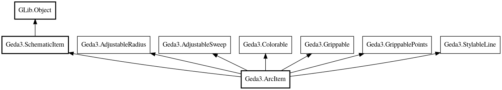

ArcItem
Object Hierarchy:

Description:
A schematic arc item
Represents a graphical arc in a schematic or symbol
| 0 |
string |
The constant 'A' indicating an arc |
| 1 |
int32 |
X coordinate of the center |
| 2 |
int32 |
Y coordinate of the center |
| 3 |
int32 |
Radius of the circle |
| 4 |
int32 |
Start angle |
| 5 |
int32 |
Sweep angle |
| 6 |
int32 |
Color index |
| 7 |
int32 |
Width of the perimeter line |
| 8 |
int32 |
Not used |
| 9 |
int32 |
The type of dash to use |
| 10 |
int32 |
The length of the dashes |
| 11 |
int32 |
The spacing between the dashes |
Content:
Constants:
Properties:
- public int center_x { get; }
The x coordinate of the center of the item
- public int center_y { get; }
The y coordinate of the center of the item
- public int color { construct set; get; }
The color index
- public LineStyle line_style { construct set; get; }
The line style
- public int radius { construct set; get; }
The radius
- public int start_angle { construct set; get; }
The starting angle of the sweep in degrees
- public int sweep_angle { construct set; get; }
The sweep angle in degrees
- public int width { construct set; get; }
The line width
Creation methods:
- public ArcItem ()
Create an arc item
- public ArcItem.with_points (int x, int y, int radius, int start_angle, int sweep_angle)
Create an arc item
Methods:
- public override Bounds calculate_bounds (SchematicPainter painter, bool reveal)
Calculate the bounds of this schematic item
- public Collection<Grip> create_grips (GripAssistant assistant)
Create grips for this schematic item
- public void get_point (int index, out int x, out int y)
- public override void invalidate_on (Invalidatable invalidatable)
Draw this item using the given painter
- public override void draw (SchematicPainter painter, bool reveal, bool selected)
Draw this item using the given painter
- public override bool intersects_box (SchematicPainter painter, Bounds box)
Check if this item intersects a box
- public override void mirror_x (int cx)
Mirror the item and child attributes along the x axis
- public override void mirror_y (int cy)
Mirror the item and child attributes along the y axis
- public override void read_with_params (string[] @params, DataInputStream stream) throws IOError, ParseError
Read this item from the input stream
- public void reverse ()
Reverse the direction of the arc
- public override void rotate (int cx, int cy, int angle)
Rotate this item and its child attributes
- public void set_point (int index, int x, int y)
Change a point on the circle
- public override double shortest_distance (SchematicPainter painter, int x, int y)
Calculate the shortest distance from the point to the item
- public override void translate (int dx, int dy)
Translate this item and its child attributes
- public bool within_sweep (int x, int y)
Determines if the point lies within the sweep of the arc
- public override void write (DataOutputStream stream) throws IOError
Write this item to the output stream
Inherited Members:
All known members inherited from class Geda3.SchematicItem
All known members inherited from class GLib.Object
- interface_find_property
- interface_install_property
- interface_list_properties
- @new
- new_valist
- newv
- new_with_properties
- add_toggle_ref
- add_weak_pointer
- bind_property
- connect
- constructed
- disconnect
- dispose
- dup_data
- dup_qdata
- force_floating
- freeze_notify
- @get
- get_class
- get_data
- get_property
- get_qdata
- get_type
- getv
- is_floating
- notify_property
- @ref
- ref_sink
- replace_data
- replace_qdata
- remove_toggle_ref
- remove_weak_pointer
- @set
- set_data
- set_data_full
- set_property
- set_qdata
- set_qdata_full
- set_valist
- setv
- steal_data
- steal_qdata
- thaw_notify
- unref
- watch_closure
- weak_ref
- weak_unref
- notify
- ref_count
All known members inherited from interface Geda3.AdjustableRadius
All known members inherited from interface Geda3.AdjustableSweep
All known members inherited from interface Geda3.Colorable
All known members inherited from interface Geda3.Grippable
All known members inherited from interface Geda3.GrippablePoints
All known members inherited from interface Geda3.StylableLine